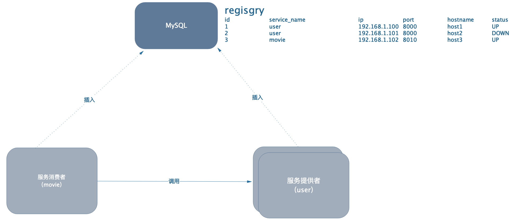

<!DOCTYPE HTML>
<html lang="zh-CN">
<head><meta name="generator" content="Hexo 3.8.0">
    <!--Setting-->
    <meta charset="UTF-8">
    <meta name="viewport" content="width=device-width, user-scalable=no, initial-scale=1.0, maximum-scale=1.0, minimum-scale=1.0">
    <meta http-equiv="X-UA-Compatible" content="IE=Edge,chrome=1">
    <meta http-equiv="Cache-Control" content="no-siteapp">
    <meta http-equiv="Cache-Control" content="no-transform">
    <meta http-equiv="pragma" content="no-cache">
    <meta http-equiv="Cache-Control" content="no-cache, must-revalidate">
    <meta http-equiv="expires" content="Mon Apr 06 2020 02:12:39 GMT+0800 (CST)">
    <meta name="renderer" content="webkit|ie-comp|ie-stand">
    <meta name="apple-mobile-web-app-capable" content="周立的博客 - 关注Spring Cloud、Docker">
    <meta name="apple-mobile-web-app-status-bar-style" content="black">
    <meta name="format-detection" content="telephone=no,email=no,adress=no">
    <meta name="browsermode" content="application">
    <meta name="screen-orientation" content="portrait">
    <meta name="theme-version" content="1.2.3">
    <meta name="root" content="/">
    
    <!--SEO-->

    <meta name="keywords" content="Spring Cloud,服务发现,注册中心">


    <meta name="description" content="第2节（ 跟我学Spring Cloud（Finchley版）-02-构建分布式应用 ）说过：

地址硬编码问题——电影微服务中将用户微服务的地址写死，如果用户微服务地址发生变化，难道要重新上线电影微服务吗？

本节来解决该问题。
不妨先思考一下，怎样才能让服务消费者总能找到服务提供者呢？或者...">


<meta name="robots" content="all">
<meta name="google" content="all">
<meta name="googlebot" content="all">
<meta name="verify" content="all">
    <!--Title-->


<title>跟我学Spring Cloud（Finchley版）-04-服务注册与服务发现-原理剖析 | 周立的博客 - 关注Spring Cloud、Docker</title>


    <link rel="alternate" href="../../atom.html" title="周立的博客 - 关注Spring Cloud、Docker" type="application/atom+xml">


    

    


<link rel="stylesheet" href="../../static/css/bootstrap.min-271a649e0635d6fa1b.css">
<link rel="stylesheet" href="../../static/css/font-awesome.min-ac2bebcf7fb5b26.css">
<link rel="stylesheet" href="../../static/css/style-6f3c140f6eee20e6591da00ec0.css">


    


    <script>
        var _hmt = _hmt || [];
        (function() {
            var hm = document.createElement("script");
            hm.src = "https://hm.baidu.com/hm.js?13766878cde148282622871dd245a973";
            var s = document.getElementsByTagName("script")[0];
            s.parentNode.insertBefore(hm, s);
        })();
    </script>


    

</head>

</html>
<!--[if lte IE 8]>
<style>
    html{ font-size: 1em }
</style>
<![endif]-->
<!--[if lte IE 9]>
<div style="ie">你使用的浏览器版本过低，为了你更好的阅读体验，请更新浏览器的版本或者使用其他现代浏览器，比如Chrome、Firefox、Safari等。</div>
<![endif]-->

<body>
    
    <nav class="main-navigation">
    <div class="container">
        <div class="row clearfix">
            <div class="col-md-12 column">
                <nav class="navbar navbar-default" style="background-color:#fff;border:0;margin-bottom:0" role="navigation">
                    <div class="navbar-header">
                        <button type="button" class="navbar-toggle" data-toggle="collapse" data-target="#navbar-collapse-1">
                            <span class="sr-only">切</span>
                            <span class="icon-bar"></span>
                            <span class="icon-bar"></span>
                            <span class="icon-bar"></span>
                        </button>
                        <a class="logo" href="../../index.html">
                            周立的博客
                        </a>
                    </div>

                    <div class="collapse navbar-collapse" style="border:0;" id="navbar-collapse-1">
                        <ul class="nav navbar-nav">
                            
                                
                                    <li>
                                        <a href="../../about.html" target="_blank">
                                            <i class="fa fa-user"></i>
                                            关于我
                                        </a>
                                    </li>
                                
                            
                                
                                    <li>
                                        <a href="../../archives.html" target="_blank">
                                            <i class="fa fa-archive"></i>
                                            归档
                                        </a>
                                    </li>
                                
                            
                                
                                    <li class="dropdown">
                                        <a href="#" class="dropdown-toggle" data-toggle="dropdown" data-hover="dropdown">
                                            <i class="fa fa-fire"></i>
                                            系列课程
                                            <strong class="caret"></strong>
                                        </a>
                                        <ul class="dropdown-menu">
                                            
                                                <li>
                                                    <a href="../../docker/00-docker-lession-index.html" target="_blank">
                                                        <i class="fa "></i>
                                                        Docker系列教程
                                                    </a>
                                                </li>
                                            
                                                <li>
                                                    <a href="../spring-cloud-index.html" target="_blank">
                                                        <i class="fa "></i>
                                                        Spring Cloud系列教程
                                                    </a>
                                                </li>
                                            
                                                <li>
                                                    <a href="../../spring-boot/spring-boot-index.html" target="_blank">
                                                        <i class="fa "></i>
                                                        Spring Boot系列教程
                                                    </a>
                                                </li>
                                            
                                        </ul>
                                    </li>
                                
                            
                                
                                    <li class="dropdown">
                                        <a href="#" class="dropdown-toggle" data-toggle="dropdown" data-hover="dropdown">
                                            <i class="fa fa-book"></i>
                                            开源书
                                            <strong class="caret"></strong>
                                        </a>
                                        <ul class="dropdown-menu">
                                            
                                                <li>
                                                    <a href="../../books/rocketmq.html" target="_blank">
                                                        <i class="fa fa-rocket"></i>
                                                        RocketMQ开发者指南
                                                    </a>
                                                </li>
                                            
                                                <li>
                                                    <a href="../../books/skywalking.html" target="_blank">
                                                        <i class="fa fa-skyatlas"></i>
                                                        Skywalking 6.2.0中文文档
                                                    </a>
                                                </li>
                                            
                                        </ul>
                                    </li>
                                
                            
                                
                                    <li class="dropdown">
                                        <a href="#" class="dropdown-toggle" data-toggle="dropdown" data-hover="dropdown">
                                            <i class="fa fa-cog"></i>
                                            工具
                                            <strong class="caret"></strong>
                                        </a>
                                        <ul class="dropdown-menu">
                                            
                                                <li>
                                                    <a href="../../tools/markdown2.html" target="_blank">
                                                        <i class="fa "></i>
                                                        微信排版工具2.0
                                                    </a>
                                                </li>
                                            
                                        </ul>
                                    </li>
                                
                            
                        </ul>
                        
                            <form id="search-form" class="navbar-form navbar-right">
                                <div class="form-group input-group">
                                    <input type="text" id="local-search-input" class="form-control" placeholder="搜我...">
                                    <span class="input-group-btn">
                                        <a class="btn btn-default">
                                            <i class="fa fa-search"></i>
                                        </a>
                                    </span>
                                </div>
                                <div id="local-search-result" class="local-search-result-cls"></div>
                            </form>
                        
                    </div>
                </nav>
            </div>
        </div>
    </div>
</nav>

    <a href="javascript:;" target="_blank">
        
    </a>


    <section class="content-wrap">
        <div class="container">
            <div class="row">
                <main class="col-md-8 main-content m-post">
                    

<p id="process"></p>
<article class="post">
    <div class="post-head">
        <h1 id="跟我学Spring Cloud（Finchley版）-04-服务注册与服务发现-原理剖析">
            
                跟我学Spring Cloud（Finchley版）-04-服务注册与服务发现-原理剖析
            
        </h1>
        <div class="post-meta">
    
        <span class="categories-meta fa-wrap">
            <i class="fa fa-folder-open-o"></i>
            <a class="category-link" href="javascript:;">Spring Cloud</a>
        </span>
    

    
        <span class="fa-wrap">
            <i class="fa fa-tags"></i>
            <span class="tags-meta">
                
                    <a class="tag-link" href="javascript:;">Spring Cloud</a> <a class="tag-link" href="../../tags/服务发现/index.html">服务发现</a> <a class="tag-link" href="../../tags/注册中心/index.html">注册中心</a>
                
            </span>
        </span>
    

    
        
        <span class="fa-wrap">
            <i class="fa fa-clock-o"></i>
            <span class="date-meta">2018/12/31</span>
        </span>
        
            <span class="fa-wrap">
                <i class="fa fa-eye"></i>
                <span id="busuanzi_value_page_pv"></span>
            </span>
        
    
</div>
        
        
    </div>
    
    <div class="post-body post-content" id="post-content">
        
    <div class="toc-article">
        <strong>
            目录
        </strong>
        <div class="toc-content">
            <ol class="toc"><li class="toc-item toc-level-2"><a class="toc-link" href="#服务发现原理初探"><span class="toc-text">服务发现原理初探</span></a></li><li class="toc-item toc-level-2"><a class="toc-link" href="#服务发现原理深入"><span class="toc-text">服务发现原理深入</span></a></li><li class="toc-item toc-level-2"><a class="toc-link" href="#拓展阅读"><span class="toc-text">拓展阅读</span></a></li></ol>
        </div>
    </div>


        <p>第2节（ <a href="../finchley-2/index.html">跟我学Spring Cloud（Finchley版）-02-构建分布式应用</a> ）说过：</p>
<blockquote>
<p>地址硬编码问题——电影微服务中将用户微服务的地址写死，如果用户微服务地址发生变化，难道要重新上线电影微服务吗？</p>
</blockquote>
<p>本节来解决该问题。</p>
<p><strong>不妨先思考一下，怎样才能让服务消费者总能找到服务提供者呢？或者说，怎样才能让服务消费者感知到服务提供者地址的变化呢？</strong></p>
<p><strong>TIPS</strong></p>
<p>目前市面上把服务消费者找到服务提供者的这种机制称为<strong>服务发现，又或者服务注册</strong>。下面来探索服务发现究竟是怎么回事。</p>
<h2 id="服务发现原理初探"><a href="#服务发现原理初探" class="headerlink" title="服务发现原理初探"></a>服务发现原理初探</h2><p>其实，服务发现机制非常简单，不妨用大家熟悉的MySQL<strong>来类比</strong>——只需一张表（图中的registry表）即可实现服务发现！</p>
<p></p>
<p>如图，如果我们能在：</p>
<ul>
<li>应用启动时，自动往registry表中插入一条数据，数据包括服务名称、IP、端口等信息。</li>
<li>应用停止时，自动把自己在registry表中的数据的status设为<code>DOWN</code> 。</li>
</ul>
<p>这样，服务消费者不就永远都能找到服务提供者了嘛！当服务消费者想调用服务提供者接口时，只需向数据库发送SQL语句 <code>SELECT * FROM registry where service_name = &#39;user&#39; and status = &#39;UP&#39;</code> 即可找到服务提供者的所有实例！IP、端口啥的都有了，自己拼接一下，再去调用就行了！</p>
<blockquote>
<p><strong>TIPS</strong></p>
<p>看，服务发现机制是不是很简单？<strong>程序猿给图中的”MySQL“的组件起了一个牛叉的名字叫：”注册中心“，也有的书将其称为”服务发现组件“。</strong></p>
</blockquote>
<p>但，这毕竟只是一个最简陋的服务发现原理。完整的服务发现要考虑的问题有很多，例如：</p>
<ul>
<li>当服务抑或所在主机突然崩溃或者进入某种不正常的情况无法提供服务（例如应用的数据库挂了）时，对应的数据理应标记DOWN，或者索性删除；</li>
<li>如果每次调用之前，都得向服务发现组件发送类似<code>SELECT * FROM registry where service_name = &#39;user&#39; and status = &#39;UP&#39;</code> 的语句，那么服务发现组件的压力得有多大？更重要的，这与当下流行的去中心化设计的思想相悖；</li>
<li>服务发现组件即使挂掉，也不应该影响微服务之间的调用。</li>
</ul>
<p>那么，一个完善的服务发现组件应该具备哪些能力呢？</p>
<h2 id="服务发现原理深入"><a href="#服务发现原理深入" class="headerlink" title="服务发现原理深入"></a>服务发现原理深入</h2><p>不妨来看一下使用服务发现组件后的架构图，如图所示。</p>
<p></p>
<p>服务提供者、服务消费者、服务发现组件这三者之间的关系大致如下：</p>
<ul>
<li><p>各个<strong>微服务在启动时，将自己的网络地址等信息注册到服务发现组件中</strong>，服务发现组件会存储这些信息；</p>
</li>
<li><p><strong>服务消费者可从服务发现组件查询服务提供者的网络地址</strong>，并使用该地址调用服务提供者的接口；</p>
</li>
<li><p>各个微服务与服务发现组件<strong>使用一定机制（例如心跳）通信</strong>。服务发现组件如长时间无法与某微服务实例通信，就会自动注销（即：删除）该实例；</p>
</li>
<li><p>当微服务网络地址发生变更（例如实例增减或者IP端口发生变化等）时，会<strong>重新注册</strong>到服务发现组件；</p>
</li>
<li><strong>客户端缓存</strong>：各个微服务将需要调用服务的地址缓存在本地，并使用一定机制更新（例如定时任务更新、事件推送更新等）。这样既能降低服务发现组件的压力，同时，即使服务发现组件出问题，也不会影响到服务之间的调用。</li>
</ul>
<p>综上，服务发现组件应具备以下功能。</p>
<ul>
<li><p><strong>服务注册表</strong>：服务注册表是服务发现组件的核心（其实就是类似于上面的registry表），它用来记录各个微服务的信息，例如微服务的名称、IP、端口等。服务注册表提供查询API和管理API，查询API用于查询可用的微服务实例，管理API用于服务的注册和注销；</p>
</li>
<li><p><strong>服务注册与服务发现</strong>：服务注册是指微服务在启动时，将自己的信息注册到服务发现组件上的过程。服务发现是指查询可用微服务列表及其网络地址的机制；</p>
</li>
<li><p><strong>服务检查</strong>：服务发现组件使用一定机制定时检测已注册的服务，如发现某实例长时间无法访问，就会从服务注册表中移除该实例。</p>
</li>
</ul>
<p>综上，使用服务发现的好处是显而易见的。Spring Cloud为我们提供多种服务发现组件的支持，例如Eureka、Consul（spring-cloud-consul）、Zookeeper（spring-cloud-zookeeper）、Aliaba Nacos（孵化中：spring-cloud-alibaba）、Etcd（孵化中：spring-cloud-etcd）等。<strong>下一节，本教程将以Eureka为例，为大家详细讲解Spring Cloud中的服务注册与服务发现；基于Consul以及Nacos的服务发现，则会以番外形式出现。</strong></p>
<h2 id="拓展阅读"><a href="#拓展阅读" class="headerlink" title="拓展阅读"></a>拓展阅读</h2><ul>
<li>spring-cloud-consul：<a href="javascript:;" target="_blank" rel="noopener">https://github.com/spring-cloud/spring-cloud-consul</a></li>
<li>spring-cloud-zookeeper：<a href="javascript:;" target="_blank" rel="noopener">https://github.com/spring-cloud/spring-cloud-zookeeper</a></li>
<li>spring-cloud-alibaba：<a href="javascript:;" target="_blank" rel="noopener">https://github.com/spring-cloud-incubator/spring-cloud-alibaba</a></li>
<li>spring-cloud-etcd：<a href="javascript:;" target="_blank" rel="noopener">https://github.com/spring-cloud-incubator/spring-cloud-etcd</a></li>
</ul>

        <h2>相关文章</h2><ul><li><a href="../finchley-5/index.html">跟我学Spring Cloud（Finchley版）-05-服务注册与服务发现-Eureka入门</a></li><li><a href="../finchley-6/index.html">跟我学Spring Cloud（Finchley版）-06-服务注册与服务发现-Eureka深入</a></li><li><a href="../finchley-out-1-eureka-security/index.html">跟我学Spring Cloud（Finchley版）番外-01-Eureka安全详解</a></li><li><a href="../finchley-26/index.html">跟我学Spring Cloud（Finchley版）-26-使用Elasticsearch作为Zipkin Server的后端存储</a></li><li><a href="../../advertisment/my-spring-book-code/index.html">《Spring Cloud与Docker微服务架构实战》配套代码</a></li></ul>
    </div>
    
    <div class="post-footer">
        <div class="col-sm-10">
            <div>
                <b>本文链接</b>：<a href="" target="_blank">跟我学Spring Cloud（Finchley版）-04-服务注册与服务发现-原理剖析</a>
            </div>
            <div>
                
                    转载声明：本博客由周立创作，采用 <a href="javascript:;" target="_blank"> CC BY 3.0 CN </a> 许可协议。可自由转载、引用，但需署名作者且注明文章出处。如转载至微信公众号，请在文末添加作者公众号二维码。
                
            </div>
            <div>
                
            </div>
        </div>
        <div class="col-sm-2">
            
        </div>
    </div>
</article>

<div class="article-nav prev-next-wrap clearfix">
    
        <a target="_blank" href="../finchley-5/index.html" class="pre-post btn btn-default" title="跟我学Spring Cloud（Finchley版）-05-服务注册与服务发现-Eureka入门">
            <i class="fa fa-angle-left fa-fw"></i><span class="hidden-lg">上一篇</span>
            <span class="hidden-xs">跟我学Spring Cloud（Finchley版）-05-服务注册与服务发现-Eureka入门</span>
        </a>
    
    
        <a target="_blank" href="../../work/mysql-ddl-2-pgsql-ddl/index.html" class="next-post btn btn-default" title="MySQL建表语句转PostgreSQL建表语句全纪录">
            <span class="hidden-lg">下一篇</span>
            <span class="hidden-xs">MySQL建表语句转PostgreSQL建表语句全纪录</span><i class="fa fa-angle-right fa-fw"></i>
        </a>
    
</div>


    <div id="comments">
        
   <p>评论系统未开启，无法评论！</p>

    </div>


                </main>
                
    <aside class="col-md-4 sidebar">
        
        <div class="widget about-me">
    <div class="row">
        <div class="col-md-5">
            
        </div>
        <div class="col-md-7">
            <a class="series-a" href="javascript:void(0)">公众号</a>
            <ul>
                <li>• 技术干货推送</li>
                <li>• 免费资料领取</li>
                <li><b>• 扫码领取更多惊喜</b></li>
            </ul>
        </div>
    </div>
    
        <div class="row">
            <div class="col-md-5">
                
            </div>
            <div class="col-md-7">
                <a class="series-a" href="javascript:void(0)">小程序</a>
                <ul>
                    <li>• 原创笔记</li>
                    <li>• 独家心法</li>
                    <li><b>• 扫码领取</b></li>
                </ul>
            </div>
        </div>
    
</div>


        
        
    <div class="ad">
        <div class="row">
            <div class="col-md-12">
                <a href="javascript:;" rel="nofollow" target="_blank">
                    
                </a>
            </div>
        </div>
    </div>


        
        <div class="widget">
    <div class="row">
        <div class="col-md-3">
            
        </div>
        <div class="col-md-9">
            <a class="series-a" target="_blank" href="../spring-cloud-index.html">Spring Cloud系列教程</a>
            <p>全面、通俗易懂的Spring Cloud教程</p>
        </div>
    </div>
    <div class="row">
        <div class="col-md-3">
            
        </div>
        <div class="col-md-9">
            <a class="series-a" target="_blank" href="javascript:;">Spring Cloud Alibaba视频教程</a>
            <p>全网唯一，你值得拥有</p>
        </div>
    </div>
    <div class="row">
        <div class="col-md-3">
            
        </div>
        <div class="col-md-9">
            <a class="series-a" target="_blank" href="../../docker/00-docker-lession-index.html">Docker系列教程</a>
            <p>Docker系列</p>
        </div>
    </div>
    <div class="row">
        <div class="col-md-3">
            
        </div>
        <div class="col-md-9">
            <a class="series-a" target="_blank" href="../../spring-boot/spring-boot-index.html">Spring Boot系列教程</a>
            <p>Boot是基石...</p>
        </div>
    </div>
</div>


        
        
    <div class="widget">
        <h3 class="title">分类</h3>
        <ul class="category-list"><li class="category-list-item"><a class="category-list-link" href="javascript:;"><i class="fa" aria-hidden="true">Docker</i></a><span class="category-list-count">31</span></li><li class="category-list-item"><a class="category-list-link" href="javascript:;"><i class="fa" aria-hidden="true">Kubernetes</i></a><span class="category-list-count">2</span></li><li class="category-list-item"><a class="category-list-link" href="javascript:;"><i class="fa" aria-hidden="true">Spring Boot</i></a><span class="category-list-count">6</span></li><li class="category-list-item"><a class="category-list-link current" href="javascript:;"><i class="fa" aria-hidden="true">Spring Cloud</i></a><span class="category-list-count">94</span></li><li class="category-list-item"><a class="category-list-link" href="javascript:;"><i class="fa" aria-hidden="true">Spring Cloud Alibaba</i></a><span class="category-list-count">16</span></li><li class="category-list-item"><a class="category-list-link" href="javascript:;"><i class="fa" aria-hidden="true">Spring Cloud Stream</i></a><span class="category-list-count">1</span></li><li class="category-list-item"><a class="category-list-link" href="../../categories/其他/index.html"><i class="fa" aria-hidden="true">其他</i></a><span class="category-list-count">13</span></li><li class="category-list-item"><a class="category-list-link" href="../../categories/安装教程/index.html"><i class="fa" aria-hidden="true">安装教程</i></a><span class="category-list-count">7</span></li><li class="category-list-item"><a class="category-list-link" href="../../categories/工作/index.html"><i class="fa" aria-hidden="true">工作</i></a><span class="category-list-count">20</span></li></ul>
    </div>


        
        
        
        

        
    </aside>

            </div>
        </div>
    </section>
    <footer class="main-footer">
    <div class="container">
        <div class="row">
        </div>
    </div>
</footer>

<a id="back-to-top" class="icon-btn hide">
	<i class="fa fa-chevron-up"></i>
</a>


    <div class="copyright">
    <div class="container">
        <div class="row">
            <div class="col-sm-12">
                <div class="busuanzi">
    
        访问量:
        <strong id="busuanzi_value_site_pv">
            <i class="fa fa-spinner fa-spin"></i>
        </strong>
        &nbsp; | &nbsp;
        访客数:
        <strong id="busuanzi_value_site_uv">
            <i class="fa fa-spinner fa-spin"></i>
        </strong>
        &nbsp; <strong>Since 2018-12-26</strong>
    
</div>

            </div>
            <div class="col-sm-12">
                <span>Copyright &copy; 2017
                </span> |
                <span>
                    Powered by <a href="javascript:;" class="copyright-links" target="_blank" rel="nofollow">Hexo</a>
                </span> |
                <span>
                    Theme by <a href="javascript:;" class="copyright-links" target="_blank" rel="nofollow">ITMuch</a>
                </span>
            </div>
        </div>
    </div>
</div>

<script src="../../static/js/jquery.min.js"></script>
<script src="../../static/js/bootstrap.min.js"></script>
<script src="../../static/js/bootstrap-hover-dropdown.min.js"></script>

    <script src="../../static/js/search-3f4fbd0557c869ca0516ebb5f.js"></script>


    <script async="" src="../../static/js/busuanzi.pure.mini.js"></script>


<script src="../../static/js/app-da10bb3b2ae5c8348d2bd2cc3faf.js"></script>


</body>
